R&D internship · Volga Instruments · Robotics
Warehouse Pick and Place System
Vaska is a warehouse robot whose arm finds high-value phone boxes among other products, picks them without damage and places them in a mobile rack. Built by four interns for Volga Instruments; I designed its electronics and its ROS dashboard.
- My role
- Electronics design (hardware and software), ROS dashboard UX for the teaching pendant
- Team
- 4 interns, 1 project owner, 2 technical assistants
- Timeline
- 1 year · Jan 2018 to Jan 2019
- Stack
- ROS, OpenCV, STM32, Intel NUC, Intel RealSense D435
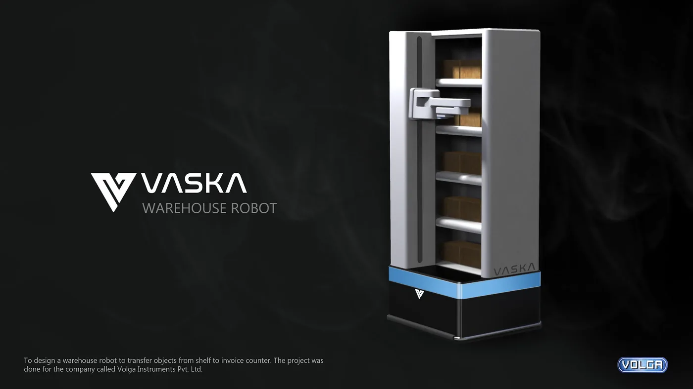
Impact
- 90%+
- Less pilferage of iPhone boxes, as tested by Volga Instruments' clients.
- Faster to the hub
- Less time spent scanning inside the warehouse and reporting to its sorting and distribution hub.
- A reorganised warehouse
- The warehouse split into two sections, one robotic and one manual. High-value items now go only through the automated section.
01 · The brief
Small, expensive items were disappearing from the warehouse.
This was before hyper-delivery platforms. Big warehouses served a whole city or zone, independent of any one platform, with reserved shelves for many distributors and retailers. A fresh stock of iPhones would wait there until it was ordered and moved to a sorting centre.
Mobile phone boxes, gold coins and other small, costly items were stolen in a simple way. A worker hid one inside a rarely ordered product, such as a pressure cooker, and later ordered that product.
The answer was to take hands out of the loop. The robot had to:
- Identify the ordered box from an array of many other products, using machine learning and image processing.
- Judge the exact distance to the box with a depth camera, so the arm's kinematics could be planned accurately.
- Pick the box up without damage and place it in a mobile shelf.
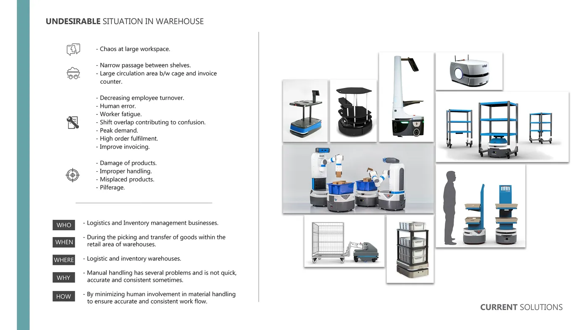
02 · The team
Four interns split the system between us, each owning one part end to end. A project owner led the work, and two technical assistants supported it.
-
Me
Electronics design, hardware and software
Plus the UX of the ROS dashboard for the teaching pendant
-
2 interns
Mechanical and mechatronics
-
1 intern
Space planning and robot operations planning
-
1 project owner
Owned the project
-
2 technical assistants
Robot and teaching pendant setup, data gathering and runs
03 · Design process
We did not start with a robot arm. We started in the warehouse, and each decision narrowed the next.
-
1
Field visits
We visited warehouses to learn which items were truly high-value and prone to pilferage.
Our focus was phone boxes, but we found more items that should only be handled by automation:
- Luxury watches
- CPUs
- Luxury perfumes
- Gold coins and jewellery
- Camera gear
- Compact high-end cameras
-
2
Grading the items
We plotted every item by price against volume. iPhones sat right in the middle.
Most of the items came in plain cuboid boxes with a plastic wrap. That later suited our suction mechanism well.
-
3
How to lift a box
We brainstormed lifting mechanisms, plus the safety and handling each one needed.
We ranked every method in a matrix for cost, efficiency, handling and time of operation. Suction came out on top.
Its one limit: the surface must be smooth and not perforated. So we added an image-processing model that reads surface and texture to find a safe spot to lift from.
-
4
Do we need a robot at all?
We stepped back and compared three options: manual work with better checks, people and robots working together, and full automation.
Any gate-keeping of goods in and out would need a label on the product's own packaging, or a second layer of packaging. Labels reduce the product's sanctity. Wrapping and unwrapping can damage it, or open a new route for pilferage.
So we committed to a fully autonomous arm, one that could also work off-hours and collect orders accurately at the dispatch station.
-
5
Choosing the actuation
We ranked the options on cost, actuation mechanism, access to parts and spares, predictability and repeatability.
Machine learning identified the objects, and the arm had to reach its target with a precision of a tenth of a millimetre. That ruled out some cheaper options, such as hydraulics.
We studied how each actuation type holds up in the long run, and looked at purpose-built robots from Kuka and ABB. We settled on high-precision electric motors, steppers and servos, for their predictable repeatability.
-
6
Choosing the arm
We weighed a vertical arm like a JCB's, a SCARA arm, an articulated arm, a delta robot and a Cartesian gantry.
We built scaled foam-board models with off-the-shelf servo motors to copy the real working setup.
The team agreed on SCARA. It reached the horizontal racks with the easiest, most predictable kinematics. It was also easy to train, because it moves much like a human arm reaching to grab something.
-
7
Choosing the grip
Pneumatic suction lifted most boxes in our use case without a dent.
Pneumatic, hydraulic and servo grippers all struggled to grip without concentrating pressure on the box. Suction also needed far less planning of how to grab and with how much force.
We used up to 4.5 kg of suction, adjusted by piezoelectric feedback. Once suction passed the weight of the box, the box rose a few millimetres, which the camera confirmed. There were no repeated gripper attempts leaving pressure marks. The arm then built about 10% more pressure to carry the box safely from the warehouse shelf to the robot's shelf.
04 · The concept
A SCARA arm with a suction cup, riding on a mobile shelf.
With the mechanism chosen, sketching explored arm shapes and how the arm, the shelf and the moving base fit together. The final concept combines three parts: a SCARA arm with vacuum suction cups to pick the object, a mobile shelf to hold it, and a self-navigating platform underneath.
In use, the warehouse receives a purchase order and sends it to Vaska. Vaska finds the product's coordinates, travels to that spot, picks the object from the shelf and delivers it to the packaging counter.
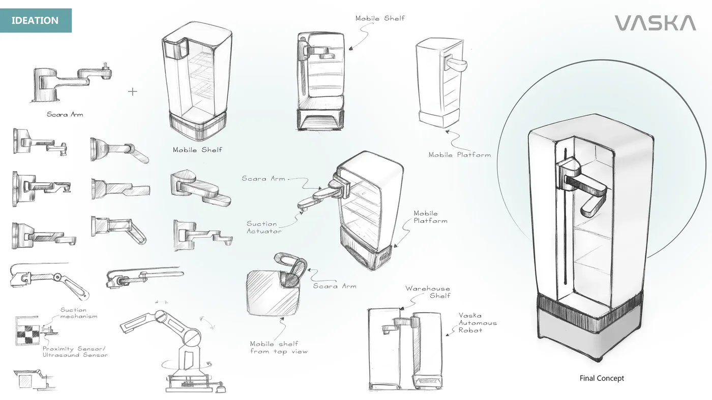
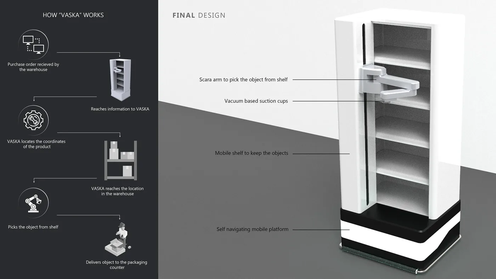
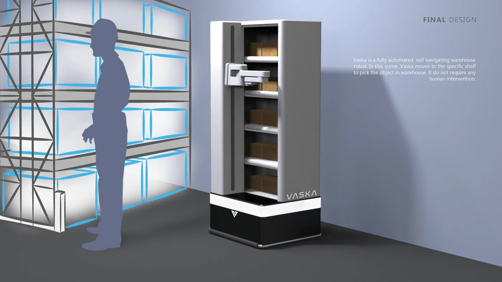
05 · Electronics
I designed the electronics as a distributed system: an array of small controllers, all reporting to one central computer.
- Actuation
- An array of STM32 microcontrollers, driving each servo motor and the pneumatic actuator precisely.
- Safety
- Piezoelectric sensors on the arm for collision detection.
- Communication
- Every STM32 talked to the others and to the central processing unit, an Intel NUC, over RS485.
- Vision
- An Intel RealSense D435 depth camera running on the NUC. OpenCV ran on its feed to detect the ordered item, profile its dimensions and give a confidence score.
06 · ROS dashboard
The dashboard was the operator's window into the robot. It showed the live camera feed with detections, and took the arm through three modes, in order.
-
1
Step 1
Teaching pendant mode
The motors stay off while an operator moves the arm by hand. Optical encoders record the motion for picking up an object.
-
2
Step 2
Test mode
For testing the kinematic models before the arm runs on its own.
-
3
Step 3
Operational mode
Independent operation, driven by the ordered item and its location in the warehouse.
07 · Build and test
My mechanical teammates tuned the arm for weight against deformation. Generative design trimmed the two aluminium arm links from 1090 g to 1030 g and from 500 g to 387 g. In validation, the lighter arm's maximum deformation was 2.5 mm, down from 3.75 mm.
Then we built it: machined parts, a working arm, and the electronics wired in.
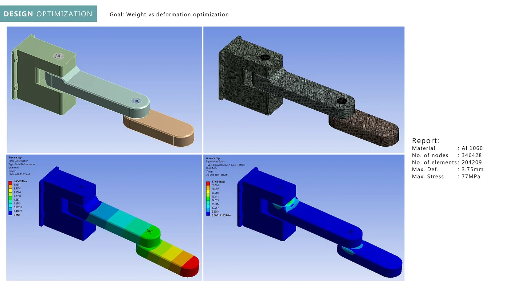
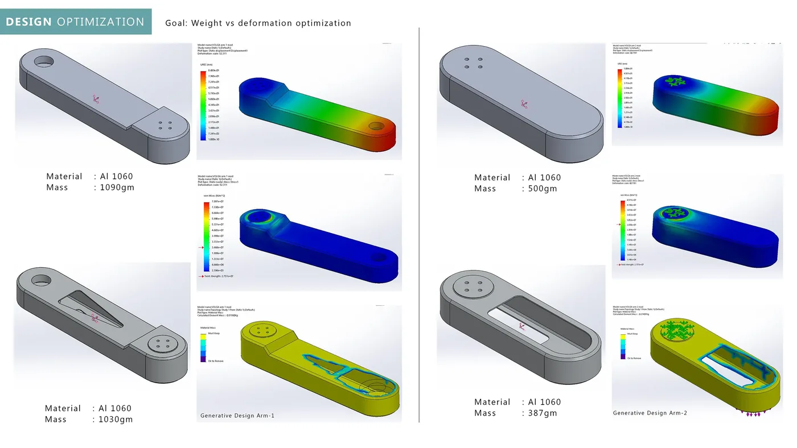
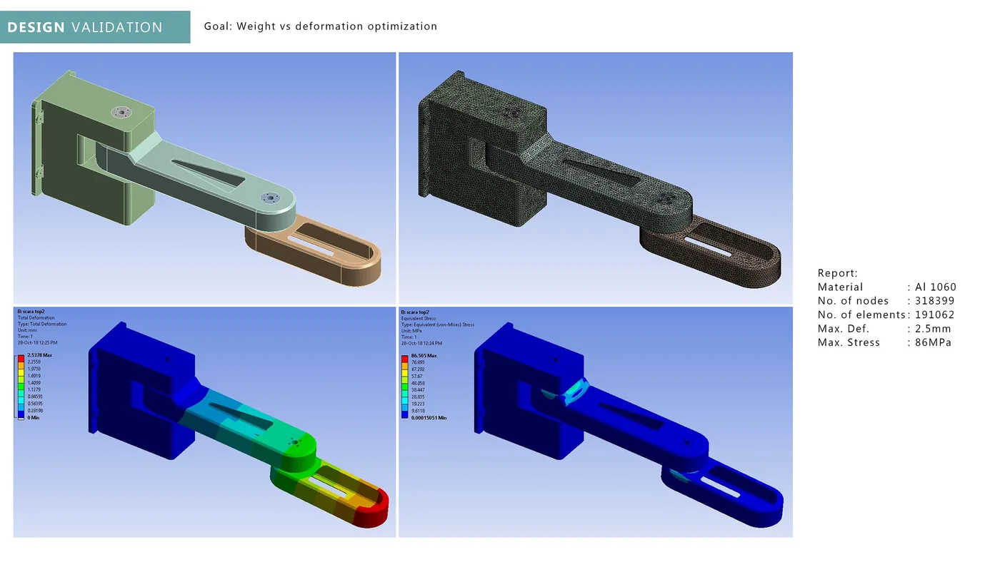
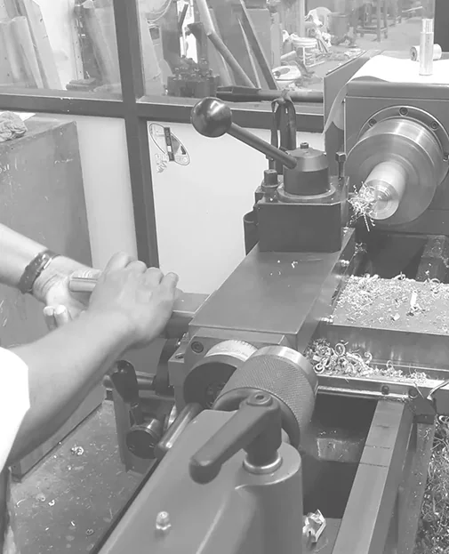
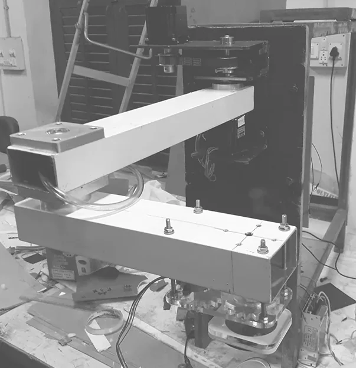
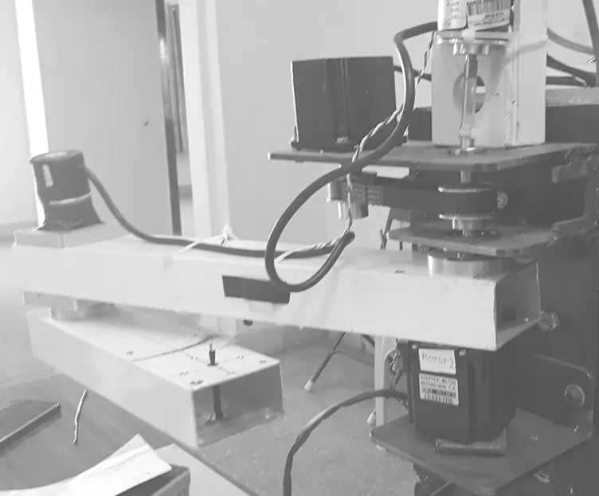
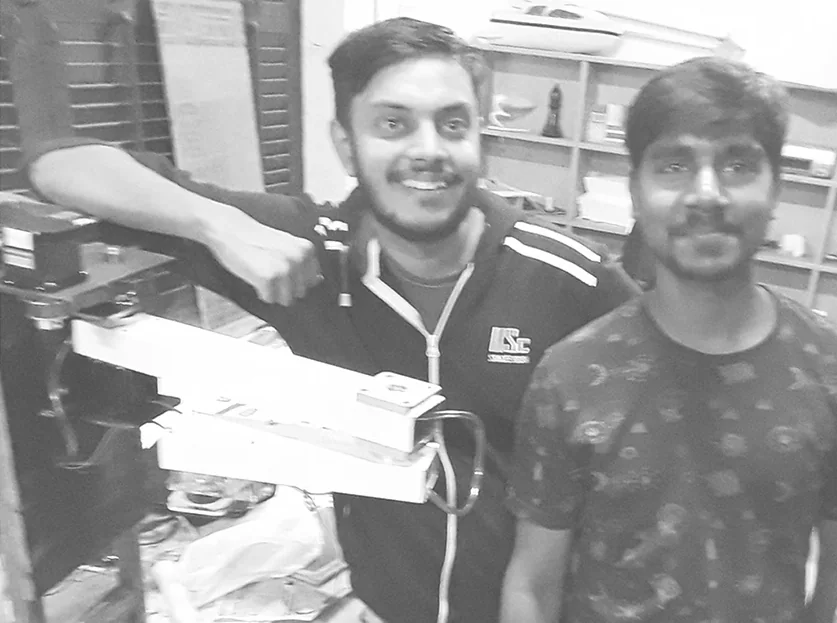
Prototyping: machining parts, the assembled arm, and the team with it.
08 · Outcome
The finished robot could easily identify, pick and place phone boxes in the mobile rack.
We demonstrated it at Ripples 2018, the design showcase at IISc, where it drew attention from people looking to automate their warehouses.
HUL approached us for a test run in their warehouse. Their use case was also pick and place, but for a different reason: handling delicate objects like glass jars and bottles in FMCG orders, not pilferage.
The robot worked well there, with one limit: its reach in height. Our rack and arm were set up for phone boxes at defined heights. For HUL, the jars and bottles would need to be stored within a certain height, or the arm mounted on a vertical warehouse lift.
09 · What we learned
- Lighter and mountable
- The arm should be lighter and easy to mount on vertical warehouse lifts or mobile warehouse robots, ideally interchangeably.
- Suction and gripper
- Pneumatic suction lifts most articles, even slightly curved ones, but some are safer in a gripper. An interchangeable head, or two variants for different product ranges, would widen what the arm can handle.
- Scan the barcode
- The same camera could also read barcodes. That would cut detection time with less processing, and speed up each pick and place.